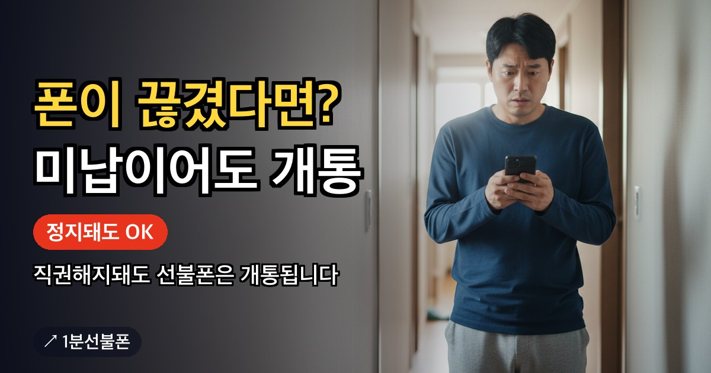

핸드폰 요금을 오래 밀리면 이용정지를 거쳐 직권해지로 이어질 수 있습니다. 해제까지는 시간이 걸리는데, 그 사이 전화도 인증 문자도 받을 번호가 없으면 곤란합니다. 선불폰은 미납 상태여도 새로 개통할 수 있어 유심만 준비되면 5분 만에 임시 번호를 만들 수 있습니다.
- 미납으로 정지·직권해지돼도 선불폰은 새로 개통 가능
- 조건은 대한민국 거주, 하나뿐
- 유심 6,600~8,800원 · 요금제 12,100원부터
- 유심 있으면 개통까지 5분
- 정지된 기존 번호를 되살리려면 이용하던 통신사에 문의해야 함
핸드폰 미납 정지, 어떻게 진행되나요
통신요금이 여러 달 밀리면 통신사는 보통 이용정지 안내를 먼저 보내고, 그래도 정리되지 않으면 회선을 직권해지합니다. 다만 정지까지 걸리는 기간이나 직권해지 시점은 통신사·요금제마다 다르므로, 정확한 일정은 이용하던 통신사 고객센터나 앱 고지 문자로 확인하는 것이 가장 정확합니다.
미납이 길어지면 다른 통신사에서도 신규가입이 막히는 이른바 통신불량자 상태로 분류되는 경우가 있습니다. 통신불량자 조회방법이나 정확한 해제 절차는 통신사마다 기준이 달라 여기서 특정 기간을 단정해 안내하기는 어렵습니다. 가입돼 있던 통신사에 직접 확인하는 것이 가장 정확합니다.
이용정지 기간에는 전화나 문자를 주고받기 어려워, 그 사이 걸려온 연락이나 인증 문자를 놓치는 경우가 많습니다. 급한 연락이 예상된다면 정지 상태를 방치하기보다 쓸 수 있는 번호를 먼저 마련해두는 편이 마음이 놓입니다.
직권해지된 폰, 지금 바로 되살릴 수 있나요
직권해지된 번호를 되살릴 수 있는지, 어떤 절차가 필요한지는 이용하던 통신사와 경과 기간에 따라 다릅니다. 이 부분은 1분선불폰이 대신해 줄 수 있는 영역이 아니라서, 정지된 폰 살리기가 목표라면 먼저 이용하던 통신사에 문의하는 것이 순서입니다.
문제는 그 절차가 끝날 때까지 시간이 걸린다는 점입니다. 그동안 전화를 받거나 인증 문자를 받을 번호가 없으면 일상이 불편해집니다. 이때는 기존 번호 해제와 별개로, 새 유심으로 선불폰을 개통해 임시로 쓸 번호를 먼저 만들어두는 방법이 있습니다.
미납 상태여도 선불폰은 새로 개통할 수 있어요
선불폰은 요금을 먼저 충전해 쓰는 방식이라 개통 전에 신용을 조회하지 않습니다. 그래서 미납·연체 이력이 있거나 통신불량자 상태여도 선불폰 개통에는 영향이 없습니다. 조건은 대한민국에 거주하고 있다는 것, 하나뿐입니다.
비대면 신청은 본인 명의 간편인증서가 있어야 진행할 수 있고, 유심만 준비돼 있으면 개통까지 5분이면 끝납니다. 미납 상태에서도 개통이 되는 이유를 좀 더 자세히 보고 싶다면 미납 선불폰 글도 함께 확인하세요. 외국인은 온라인 개통이 되지 않아 센터 방문 개통으로 진행합니다.
이때 개통은 반드시 본인 명의로 진행해야 합니다. 가족이 쓸 번호가 급해도 대신 인증해줄 수 없고, 각자 본인 명의 간편인증서로 직접 인증을 거쳐야 합니다.
유심부터 준비하세요, 통신망마다 판매처가 다릅니다
선불폰을 개통하려면 유심이 먼저 있어야 합니다. 통신망에 따라 상품명과 구매처가 다르니 헷갈리지 않게 확인하세요.
| 통신망 | 상품명 | 구매처 | 포장 |
|---|---|---|---|
| KT | 바로유심 | CU · GS25 · 이마트24 | 민트색 |
| LG U+ | 모두의원칩 | 이마트24 · B마트 · 지하철 역 자판기 | 검은색 |
유심 가격은 6,600~8,800원이고, 요금제는 12,100원부터 시작합니다. 통화·문자와 각종 서비스 본인인증 용도로만 번호가 필요하다면 이 가격대로도 충분합니다. 유심 준비가 처음이라면 유심 준비 안내에서 순서를 확인하세요.
2026년 10월부터는 안면인증을 반드시 통과해야 합니다
온라인 신청은 안면인증과 본인인증을 거칩니다. 2026년 10월부터는 안면인증을 반드시 통과해야 개통할 수 있습니다. 통과율을 높이려면 두 가지를 기억하세요.
- 형광등 빛이 얼굴에 반사되지 않는 자리에서 진행하세요.
- 고개를 돌리라는 안내가 나오면 시선도 고개와 함께 움직이세요. 고개만 돌리고 눈으로 화면을 보면 인식률이 떨어집니다.
간편인증서가 없어 온라인 진행이 어렵다면 센터 찾기에서 방문 개통을 확인하세요. 개통 절차 전체가 궁금하면 개통 방법도 참고하세요.
개통 후 해피콜, 놓치면 번호가 다시 끊깁니다
온라인 개통을 마치면 확인 전화인 해피콜이 옵니다. 본인이 실제로 신청했는지 확인하는 절차라서 이 전화를 반드시 받아야 하며, 받지 못하면 번호가 해지될 수 있습니다.
기존 번호가 정지된 상태에서 급하게 새 번호를 만든 경우일수록, 모르는 번호도 놓치지 않고 받을 수 있도록 개통 직후 며칠은 신경 써서 챙기는 것이 좋습니다. 세컨 번호로 쓸 계획이라면 세컨폰 개통 글도 참고하세요.
신용불량 상태라도 번호를 새로 만드는 데는 문제없어요
미납이 길어져 통신불량자나 신용불량 상태까지 갔더라도, 선불폰 개통 자격에는 영향을 주지 않습니다. 통신불량자 등록과 선불폰 개통은 별개의 절차이기 때문입니다. 신용불량 상태에서의 개통 조건을 더 자세히 보고 싶다면 신용불량 휴대폰 개통 글을 확인하세요.
요금제도 처음부터 고민하지 않아도 됩니다. 우선 12,100원부터 시작해 본인인증용으로 쓰는 방법이 있습니다. 더 넉넉한 요금제가 필요하면 상담으로 안내받을 수 있습니다. 전체 요금제는 요금제 보기에서 확인할 수 있습니다.
지금 필요한 게 통화·문자뿐인지, 인터넷 검색이나 지도 앱까지 쓸 데이터인지 미리 정해두면 요금제를 고르는 시간이 줄어듭니다.
자주 묻는 질문
핸드폰 요금을 미납해서 정지됐는데, 새 번호를 만들 수 있나요?
네, 가능합니다. 선불폰은 신용 조회 없이 개통되는 방식이라 미납·연체 상태여도 새 번호를 만들 수 있습니다. 조건은 대한민국 거주 하나입니다.
직권해지된 폰은 이 방법으로 다시 쓸 수 있나요?
아니요. 직권해지된 기존 번호를 되살릴 수 있는지와 그 절차는 이용하던 통신사에 확인해야 합니다. 여기서 안내하는 방법은 그 사이에 쓸 새 번호를 만드는 방법입니다.
통신불량자 조회방법이 궁금해요.
통신불량자 여부와 해제 절차는 통신사마다 기준이 달라, 정확한 확인은 이용하던 통신사 고객센터나 앱에서 하는 것이 가장 정확합니다.
유심이 없는데 개통까지 얼마나 걸리나요?
유심을 먼저 편의점이나 지하철 역 자판기에서 구매해야 합니다. 유심을 들고 있는 상태라면 개통까지 5분이면 끝납니다.
안면인증에서 계속 실패하면 어떻게 하나요?
형광등 반사를 피하고, 고개를 돌릴 때 시선도 같이 움직이면 인식률이 올라갑니다. 2026년 10월부터는 반드시 통과해야 개통되므로 미리 연습해두면 좋습니다.
같이 보면 좋은 글
미납 선불폰, 연체·신용불량이어도 개통되는 이유
통신비를 못 내 번호가 정지됐거나 새 개통이 막힌 상태라면 선불폰을 확인해보세요. 선불폰은 요금을 먼저…
개인회생 선불폰 개통 — 회생·파산·워크아웃 중에도 내 명의 번호 만드는 법
개인회생이나 개인 파산, 워크아웃, 채무조정 절차를 밟고 있어도 선불폰은 개통할 수 있습니다. 선불폰은…
신용불량 휴대폰 개통, 선불폰이면 가능합니다
신용불량 이력 때문에 휴대폰 개통이 막혔다면 선불폰을 확인해 보세요. 선불폰은 요금을 먼저 충전해 쓰는…

본인인증 가능한 선불폰, 미납이어도 12,100원부터
미납이나 연체 이력이 있으면 통신 3사 신규 개통뿐 아니라 은행 앱 같은 본인인증도 함께 막힙니다…